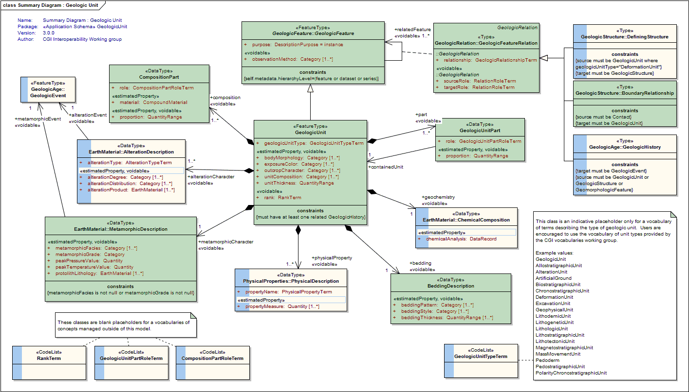
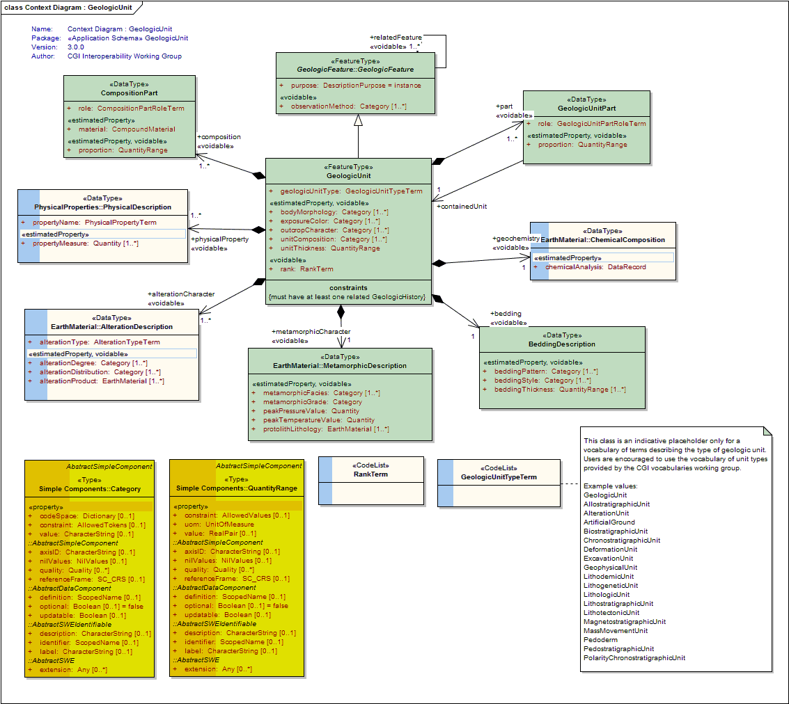
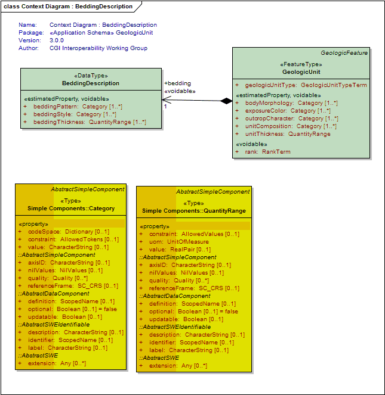
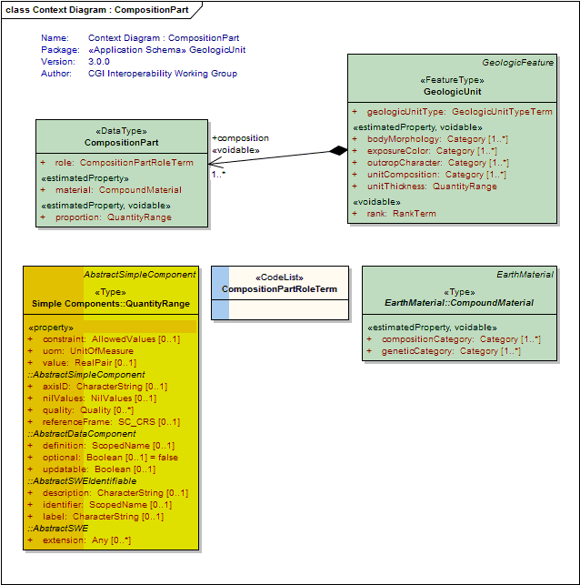

Package GeoSciML/GeologicUnit
The GeoSciML GeologicUnit Package contains classes representing notional geologic units, whose complete and precise extent is inferred to exist. Explicit spatial properties are available through association with a MappedFeature.
Geologic units includes both formal units (i.e. formally adopted and named in the official lexicon) and informal units (i.e. named but not promoted to the lexicon) and unnamed units (i.e. recognisable and described and delineable in the field but not otherwise formalised).
Class Summary |
|
| <<FeatureType>> Classes | |
GeologicUnit
<<FeatureType>>
|
Operationally, the GeologicUnit element is a container used to associate geologic properties with some mapped occurrence (through GeologicFeature.occurrence -> MappedFeature link), or with a geologic unit ControlledConcept in a vocabulary (through the GeologicUnit.classifier ->ControlledConcept link). Conceptually, may represent a body of material in the Earth whose complete and precise extent is inferred to exist (NADM GeologicUnit, Stratigraphic unit in sense of NACSN or International Stratigraphic Code), or a classifier used to characterize parts of the Earth (e.g. lithologic map unit like 'granitic rock' or 'alluvial deposit', surficial units like 'till' or 'old alluvium'). Spatial properties are only available through association with a MappedFeature. Includes both formal units (i.e. formally adopted and named in the official lexicon) and informal units (i.e. named but not promoted to the lexicon) and unnamed units (i.e. recognisable and described and delineable in the field but not otherwise formalised). |
| <<DataType>> Classes | |
BeddingDescription
<<DataType>>
|
Description of bedding characteristics (eg, bed thickness, bedding style or shape, patterns of variation in bedding thickness) in a geologic unit that has stratification. |
CompositionPart
<<DataType>>
|
Element to represent composition of a geologic unit in terms of earth material constituents. |
GeologicUnitPart
<<DataType>>
|
GeologicUnitPart associates a GeologicUnit with another GeologicUnit that is a proper part of that unit. Parts may be formal or notional. Formal parts refer to a specific body of rock, as in formal stratigraphic members. Notional parts refer to assemblages of particular EarthMaterials with particular internal structure, which may be repeated in various places within a unit (e.g. 'turbidite sequence', 'point bar assemblage', 'leucosome veins') |
| <<CodeList>> Classes | |
CompositionPartRoleTerm
<<CodeList>>
|
This class is a blank placeholder for a vocabulary of terms to describe the role that a compositional part plays in a geologic unit. |
GeologicUnitPartRoleTerm
<<CodeList>>
|
This class is a blank placeholder for a vocabulary of terms describing the nature of the parts of a geologic unit, e.g. facies, stratigraphic, interbeds, geographic, eastern facies, |
GeologicUnitTypeTerm
<<CodeList>>
|
This class is an indicative placeholder only for a vocabulary of terms describing the type of geologic unit. Users are encouraged to use the vocabulary of unit types provided by the CGI vocabularies working group. Example values: GeologicUnit AllostratigraphicUnit AlterationUnit ArtificialGround BiostratigraphicUnit ChronostratigraphicUnit DeformationUnit ExcavationUnit GeophysicalUnit LithodemicUnit LithogeneticUnit LithologicUnit LithostratigraphicUnit LithotectonicUnit MagnetostratigraphicUnit MassMovementUnit Pedoderm PedostratigraphicUnit PolarityChronostratigraphicUnit |
RankTerm
<<CodeList>>
|
This class is a blank placeholder for a vocabulary of terms describing the rank of a geologic unit (eg, Group, Formation, Member, etc) |
Tagged Values |
||
| Tag | Value | Notes |
| classMap | https://www.seegrid.csiro.au/subversion/GeoSciML/geologicUnit/trunk/classmap/ClassMap_GeologicUnit_GeoSciML_v3.xml | |
| gmlProfileSchema | #NOTES#Description: URL of the schema location of a GML profile (optional) | Description: URL of the schema location of a GML profile (optional) |
| owner | IUGS Commission for the Management and Application of Geoscience Information | |
| schemaLocation | http://schemas.geosciml.org/geologicunit/3.0/geologicUnit.xsd | |
| targetNamespace | http://xmlns.geosciml.org/GeologicUnit/3.0 | Default: FIXME Description: Target XML namespace of the application schema |
| version | 3.0.0 | Default: FIXME Description: Current version of the application schema |
| xmlns | gsmlgu | Default: FIXME Description: Namespace prefix to be used as short form of the target namespace |
| xsdDocument | geologicUnit.xsd | Default: FIXME Description: Name of an XML Schema document to create representing the content of this package |
| xsdEncodingRule | iso19136_2007_INSPIRE_Extensions | Values: iso19136_2007 | iso19139_2007 | iso19136_2007_INSPIRE_Extensions Default: iso19136_2007 Description: XML Schema encoding rule to apply |
UML Diagram: Summary Diagram : Geologic Unit

UML Diagram: Context Diagram : GeologicUnit

UML Diagram: Context Diagram : BeddingDescription

UML Diagram: Context Diagram : CompositionPart

UML Diagram: Context Diagram : GeologicUnitPart

UML Diagram: GeologicUnit package dependencies